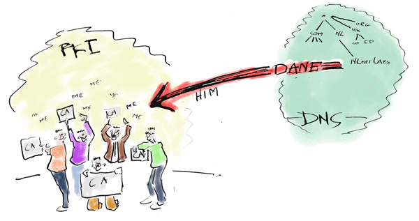

Using the Internet is like sending old-fashioned picture postcards - most of the time the message is easy for others to read. It's also like taking your shower in the public square without a curtain - many applications expose you to surveillance; few applications provide ways to make your communications a bit more private.
Close the shower curtain, get away from picture postcards: help users be less exposed when they send Internet traffic to each other and innovate with DANE, the newest addition to the domain name system.
The open source getdnsapi (getdnsapi.net) was designed to enable all kinds of applications to build innovative security services. The getdnsapi provides easy access to the global security infrastructure that is the promise of the DNS security extensions (DNSSEC) and DANE. We challenge the participants in the 2014 TNW Hack Battle in Amsterdam to build privacy enhancing new apps with getdnsapi.

Here are two challenges to start with, or design your own:
We have set up supporting infrastructure providing securely delegated domains for each participant and means to provision S/MIME certificates and PGP keys.
Have a look at our python, nodejs and C examples to get you started.